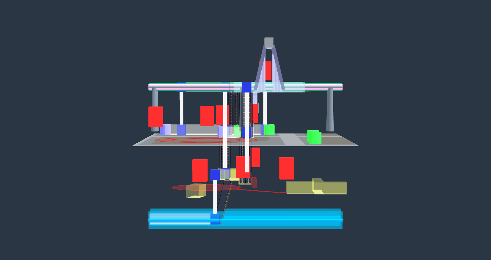
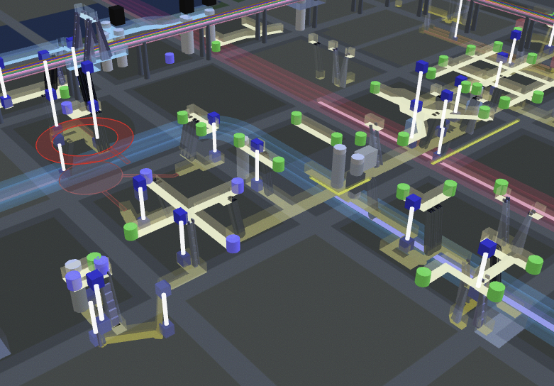

Planned Features
Early previews from the 3D map in development.




Early previews from the 3D map in development.


A three-dimensional, interactive map of the Chicago Pedway
Until it launches, use the full Pedway map. Have ideas for the 3D map? Send feedback.